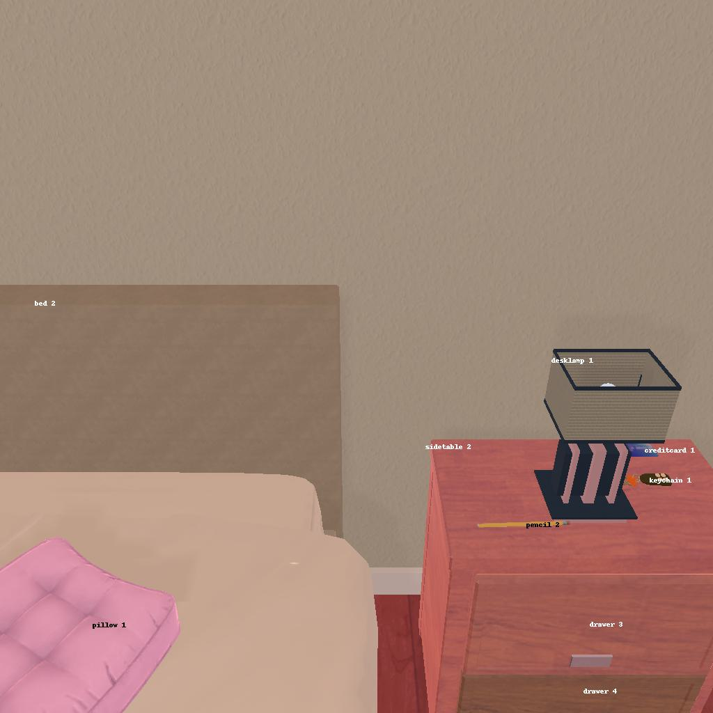

---------------------------------------------------------task: 2---------------------------------------------------------
--------------------------------------------------------------------------------------------------------------------------------------------------------------------
--------------------------------------------------------------------------------------------------------------------------------------------------------------------
Step:--------------------------------------------------------------------------10-------------------------------------------------------------------------------
----------------------------------------
VLM Prompt:
Image1:
**Instruction**
1. Analyze the provided image to identify all visible household objects, focusing on those relevant to the task description "look at pen under the desklamp."
2. Use the analysis of the image and the task hint "The agent must find an object of the desired type, locate and turn on a light source with the desired object in-hand." to answer the question: what is the most reasonable action in the choices for the task description "look at pen under the desklamp"?
4. Decide and write the answer using the template: The answer is: (i): , where i is the real number. If there is no desired object in the image, search every place based on **Initial Observation** to find the object. And if no one is exactly correct, choose a similar answer.
**Initial Observation**
You are in the middle of a room. Looking quickly around you, you can see bed (1-2), dresser (1), drawer (1-11), sidetable (1-2), desk (1), garbagecan (1), safe (1)
**Answer Choices**
(1): go to bed 1
(2): go to dresser 1
(3): go to bed 2
(4): go to sidetable 1
(5): go to drawer 2
(6): go to drawer 3
(7): go to drawer 4
(8): go to desk 1
(9): go to garbagecan 1
(10): go to drawer 5
(11): go to drawer 6
(12): go to drawer 7
(13): go to drawer 8
(14): go to drawer 9
(15): go to drawer 10
(16): go to drawer 11
(17): go to safe 1
(18): take pillow 1 from sidetable 2
(19): take keychain 1 from sidetable 2
(20): take pencil 2 from sidetable 2
(21): take creditcard 1 from sidetable 2
(22): use desklamp 1
**Answer**
Let's think step by step by following the instructions.
----------------------------------------
----------------------------------------
Original Response:
First, we analyze the image for visible household objects relevant to the task description "look at pen under the desklamp." In the image, we can see a bed labeled "bed 2," a pillow labeled "pillow 1," a sidetable labeled "sidetable 2," and various items on the sidetable, including a desklamp labeled "desklamp 1," a pencil labeled "pencil 2," a credit card labeled "creditcard 1," and a keychain labeled "keychain 1." However, there is no pen visible in the image.
Based on the task hint, the agent must find an object of the desired type (a pen), locate and turn on a light source (the desklamp) with the desired object in-hand. Since there is no pen visible in the image, we must search every place based on the initial observation to find the object.
Considering the answer choices, the most reasonable action to find a pen would likely be to search the drawers, as pens are commonly stored in drawers near a desk or sidetable. Among the options to search the drawers, we can start with the drawer closest to the desklamp for efficiency.
The answer is: (6): go to drawer 3.
----------------------------------------
----------------------------------------
>>> Refine Original VLM Response and Get Pure Action: go to drawer 3
----------------------------------------
-----------------------------------------------------------------
Running time: 19.629804611206055 seconds
Total Money: 0.6483600000000003
-----------------------------------------------------------------
-----------------------------------------------------------------
Text Observation:You arrive at loc 7. The drawer 3 is closed.
-----------------------------------------------------------------
UNSUCCEED